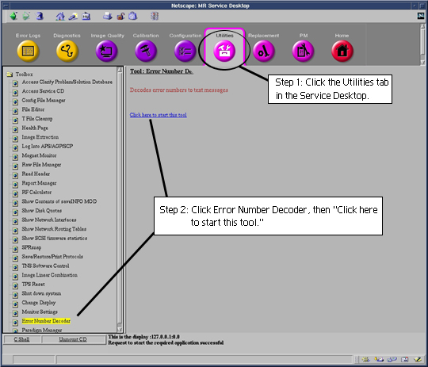

Operating Documentation
Direction 5440001-3, Rev# 6
Signa HDxt Service Methods
Module Version 1.0, Version Date 4/25/07
Operating Documentation |
The Error Number Decoder Tool lists the message text related to a specific error number.
From the Service Desktop, select the [Utilities] tab, then [Error Number Decoder], then [Click here to start this tool]. See Illustration 1.
The Decoder tool starts in a window with the prompt Please enter the error No. (s or q to quit).
Enter the appropriate error number. The corresponding message text will then be displayed.
Illustration 1: Service Desktop Window
